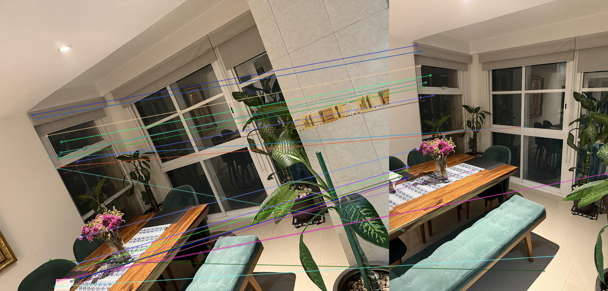
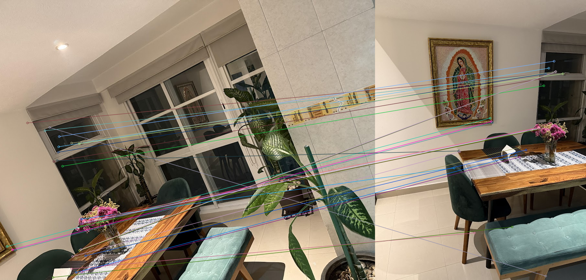
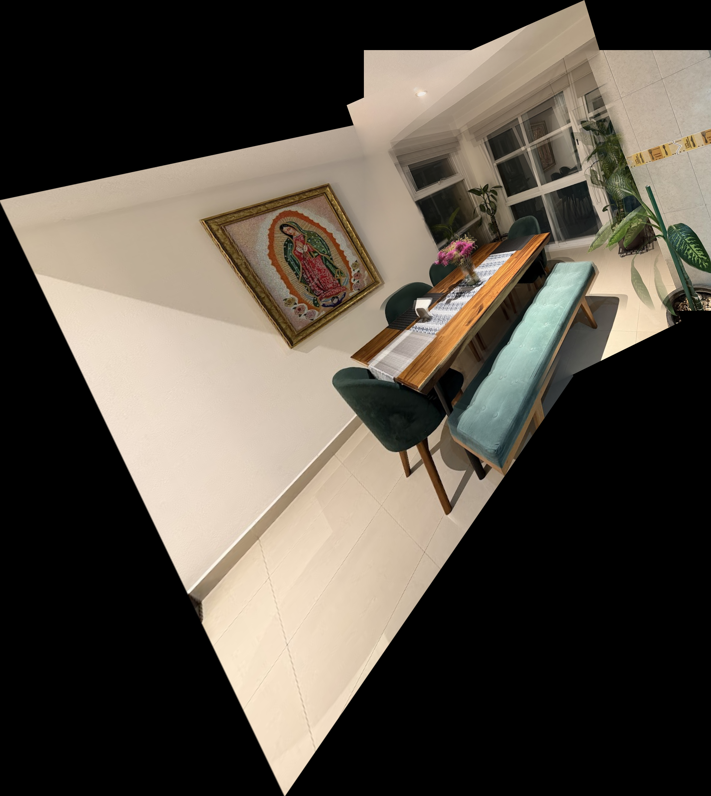
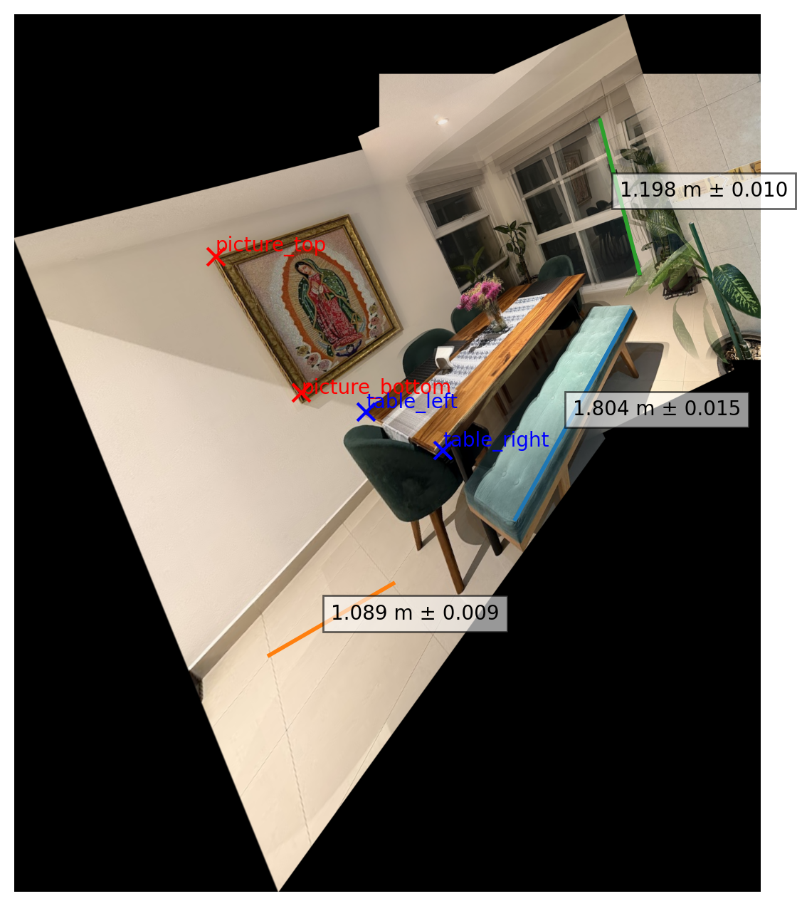

Taller 2: Fusión de Perspectivas - Registro de Imágenes y Medición del Mundo Real
Visión por Computador
Universidad Nacional de Colombia
Docente: Juan David Ospina Arango
Estudiantes:
- Santiago Betancur Montoya
- Reinaldo David Lopez Narvaez
- Jose Sebastian Garzon Parra
- Monica Paola Vargas Tirado
Introducción
El presente informe describe el desarrollo de un sistema de registro y medición de imágenes cuyo propósito es combinar múltiples vistas de una misma escena (un comedor) en un panorama único y coherente. A partir de dicho panorama se establecen referencias métricas que permiten realizar mediciones reales sobre la imagen resultante. El registro posibilita integrar información proveniente de distintas perspectivas para construir una representación espacial más completa y precisa, útil en reconstrucción 3D, fotogrametría, robótica y realidad aumentada.
Marco teórico
El registro de imágenes consiste en alinear dos o más imágenes que representan la misma escena desde distintos puntos de vista. El procedimiento típico incluye etapas como detección y descripción de características locales (SIFT, ORB, detectores modernos), emparejamiento robusto (k-NN, ratio test de Lowe), estimación de la transformación geométrica (homografía o afinidad con RANSAC) y fusión (blending) para generar panoramas visualmente coherentes. Finalmente, calibración métrica permite convertir píxeles a unidades reales mediante referencias conocidas.
Metodología
El pipeline implementado se divide en tres etapas: validación con imágenes sintéticas, registro de imágenes reales del comedor, y calibración/medición sobre la panorámica resultante. A grandes rasgos:
- Validación sintética: Se genera una imagen base con figuras y ruido; se aplican transformaciones conocidas (rotación, escala, traslación) y se valida la recuperación con SIFT/ORB, FLANN, Lowe ratio test y RANSAC.
- Registro de imágenes reales: Lectura/preprocesamiento, detección (SIFT), emparejamiento (FLANN + Lowe 0.75; BFMatcher Hamming como fallback), estimación de homografías con RANSAC y fusión mediante feather blending.
- Calibración y medición: Selección de referencias (cuadro: 117 cm; mesa: 161.1 cm), cálculo de factor m/px (media ponderada), y conversión de distancias en píxeles a metros con estimación de incertidumbre.
Experimentos y Resultados (resumen)
1. Validación con imágenes sintéticas
El pipeline recuperó correctamente las transformaciones aplicadas. Errores medios: < 3% en escala y ±4° en rotación. Los matches válidos con SIFT+FLANN+RANSAC se distribuyeron homogéneamente sobre la imagen.
Resumen numérico de validación
| Caso | Escala (GT) | Escala (Est) | Error escala (%) | Rotación (GT°) | Rotación (Est°) | Error angular (°) |
|---|---|---|---|---|---|---|
| Caso 1 | 1.00 | 1.00 | 0.0 | 0 | 0 | 0 |
| Caso 2 | 1.02 | 1.01 | -0.017 | 10 | 9.95 | -0.05 |
| Caso 3 | 0.95 | 0.95 | 0.008 | -12.5 | -12.48 | 0.01 |
| Caso 4 | 1.15 | 1.14 | -0.047 | 25 | 24.98 | 0.02 |
Donde:
- GT (ground truth): representa la imagen bajo las tranformaciones en ground truth
- Est: representa la imagen base sin ninguna tranformacion geomética
2. Registro de imágenes reales
El pipeline aplicado sobre tres fotografías reales del comedor produjo correspondencias fiables (~400 matches entre 1–2 y ~230 entre 1–3) y homografías estables. El blending final generó una panorámica continua sin ghosting visible.
 Ilustración 2. Emparejamiento de características entre las imágenes del comedor.Ilustración 3. Imagen fusionada obtenida tras el registro y blending.3. Calibración y medición
Se usaron como referencias el cuadro (117 cm) y la mesa (161.1 cm). La escala promedio resultante fue 0.0045 m/px (±0.0001 m/px). A continuación se presentan algunas mediciones extraídas:
Ilustración 4. Imagen que presenta algunas mediciones de ciertos objetos sobre el registro de las imagenes del comedor.Elemento Distancia (px) Medición (m) Incertidumbre por medicion (m) Cuadro (altura) 499.0 1.17 0.010 Mesa (ancho) 248.2 0.582 0.005 Ventana lateral 172.8 0.432 0.0039 Silla (respaldo) 263.7 0.659 0.0056 Planta decorativa 164.39 0.411 0.0037 Análisis y discusión
- SIFT mostró mayor robustez frente a variaciones de escala e iluminación respecto a ORB, a costa de mayor tiempo de cómputo.
- Las zonas con poca textura o patrones repetitivos redujeron el número de matches válidos y afectaron la estabilidad de la homografía.
- Pequeñas diferencias de exposición generaron inconsistencias en el blending; podría aplicarse corrección global de exposición o balance de colores.
- Mejoras futuras: bundle adjustment, detectores modernos (SuperPoint, LoFTR) y ajustes photométricos en el blending.
Conclusiones
El pipeline SIFT + FLANN + RANSAC + Feather Blending mostró ser eficaz para registrar y fusionar múltiples imágenes interiores, permitiendo además establecer una escala métrica y medir objetos con márgenes de error pequeños. Se recomienda explorar optimizaciones en fusión y detectores basados en aprendizaje profundo para escenas con baja textura.
Análisis de contribución individual
- Santiago Betancur Montoya y Monica Paola Vargas Tirado: organización del código y redacción del informe.
- Reinaldo David Lopez Narvaez: validación con imágenes sintéticas y métricas de error.
- Jose Sebastian Garzon Parra: registro de imágenes reales, blending y calibración métrica.
Referencias
- Chen, L., Rottensteiner, F., & Heipke, C. (2021). Feature detection and description for image matching: from hand-crafted design to deep learning. Geo-Spatial Information Science, 24(1), 58–74.
- Liu, C., Xu, J., & Wang, F. (2021). A review of keypoints’ detection and feature description in image registration. Scientific Programming (Vol. 2021).
- Liu, W., et al. (2021). A Review of Image feature descriptors in Visual positioning. CEUR Workshop.
- Zhou, L., Wu, G., Zuo, Y., Chen, X., & Hu, H. (2024). A comprehensive review of vision-based 3D reconstruction methods. Sensors, 24(7).